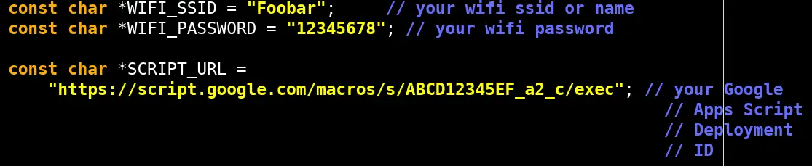
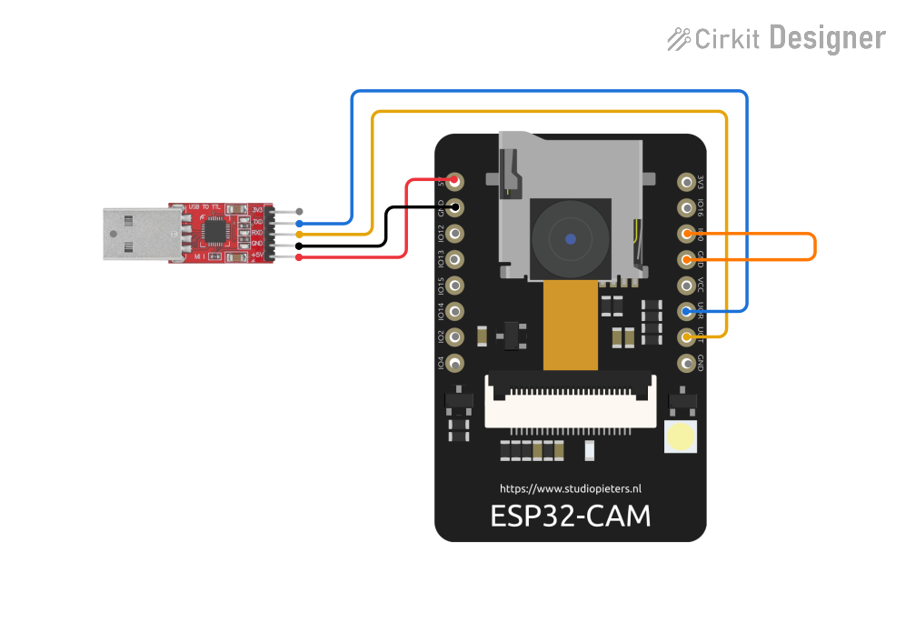
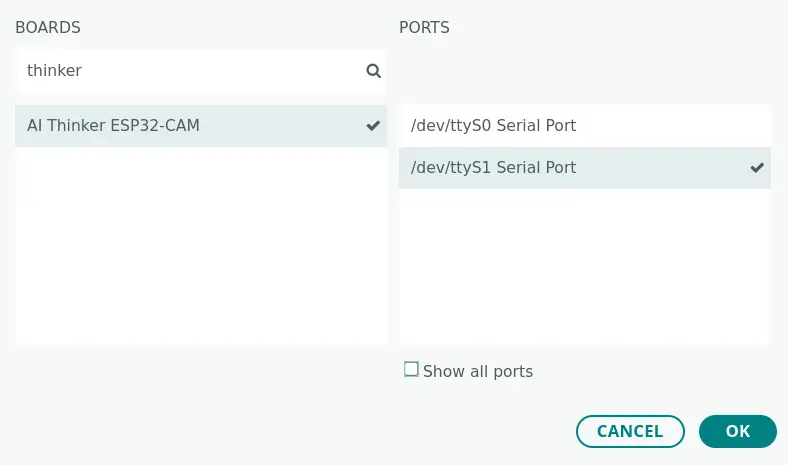
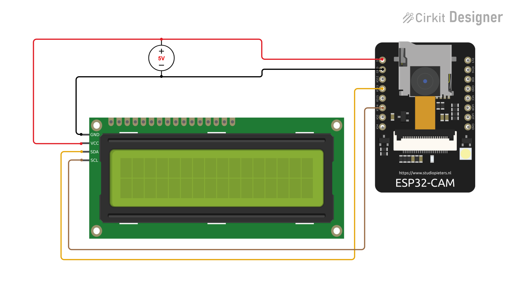
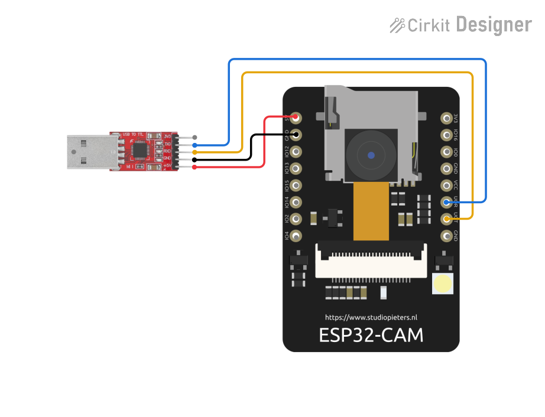

ESP32-CAM Setup
Code Setup
For this step you need to use your Deployment ID, that you created in previous page.
Instructions
- Go to src → device → sketch.ino in DesCom repository or use link.
- Copy code from file.
- Paste it in temporary file.
- Replace WiFi name and password with your credentials, like Foobar and 12345678.
- Replace your Deployement ID with placeholder, like ABCD12345EF_a2_c.

Programming Mode
Now its time to dirty your hands with bare hardware components. You need Female to Female Jumper wires for connecting ESP32-CAM's GPIO pins with USB to TTL Convertor. This connection with a jumper connection from GPIO 0 → GND pin will turn on the programming mode in ESP32-CAM. Without this you not able to program your ESP32-CAM. Following connections are the connections.
Instructions
- TTL 5V → 5V ESP32-CAM
- TTL GND → GND ESP32-CAM
- TTL RXD → U0T ESP32-CAM
- TTL TXD → U0R ESP32-CAM
- ESP32-CAM GPIO0 → GND ESP32-CAM

Upload
For this step, use Arduiono IDE with recommended setup.
Instructions
- Open Arduino IDE and replace boiler plate code with your edited code.
- Connect your TTL usb port with your system.
- Top left corner, Click on Select Board.
- Search for thinker and select AI Thinker ESP32-CAM.
- Select your usb port at right side.
- Select on OK.
- Press reset button found in back side of Board.
- Then, click on upload.
- Wait for completion.

Testing
For Testing, ESP support 2.4gz wifi so change it according to your device. Use QR_ID that is already written on Google Script and make QR Code from it. After that connect ESP32-CAM, I2C LCD with stable 5V DC power follwing connections. First ESP will try to connect with your wifi then it will show you Ready To Scan , Show QR Code. Place QR code towards ESP's camera and look for lcd status will change with Checking Please wait... then it will show your first name with ok. Now your message automatically send to parent's Telegram bot.
Instructions
- LCD SDA → GPIO13 ESP32-CAM
- LCD SCL → GPIO14 ESP32-CAM
- DC 5V → 5V ESP32-CAM
- DC GND → GND ESP32-CAM
- DC 5V → VCC LCD
- DC GND → GND LCD

Debugging
If you get any errors or not receive any messages then you can debug by connecting it to TTL. Follow connnections and use Serial Monitor to print logs. In case if you getting ECC Failure then make sure lighting is enought and increase and decrease distance between QR and ESP's camera.
Instructions
- TTL 5V → 5V ESP32-CAM
- TTL GND → GND ESP32-CAM
- TTL RXD → U0T ESP32-CAM
- TTL TXD → U0R ESP32-CAM
- After that connect your TTL with system.
- Open Arduiono IDE and select board and port.
- Top right, click on Serial Monitor option.
- Set it to baud rate 115200.
- Then look for logs will print on serial monitor.
- Use them to find out actual reason of break.
